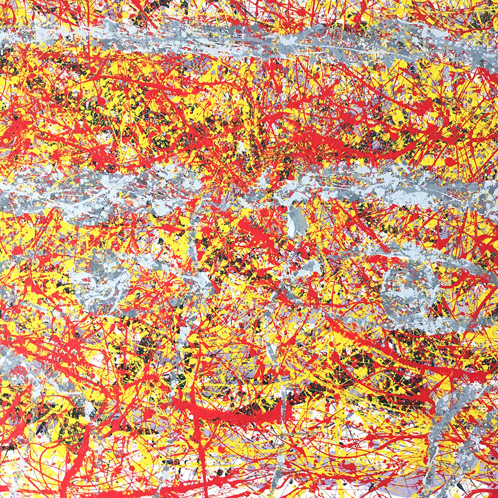
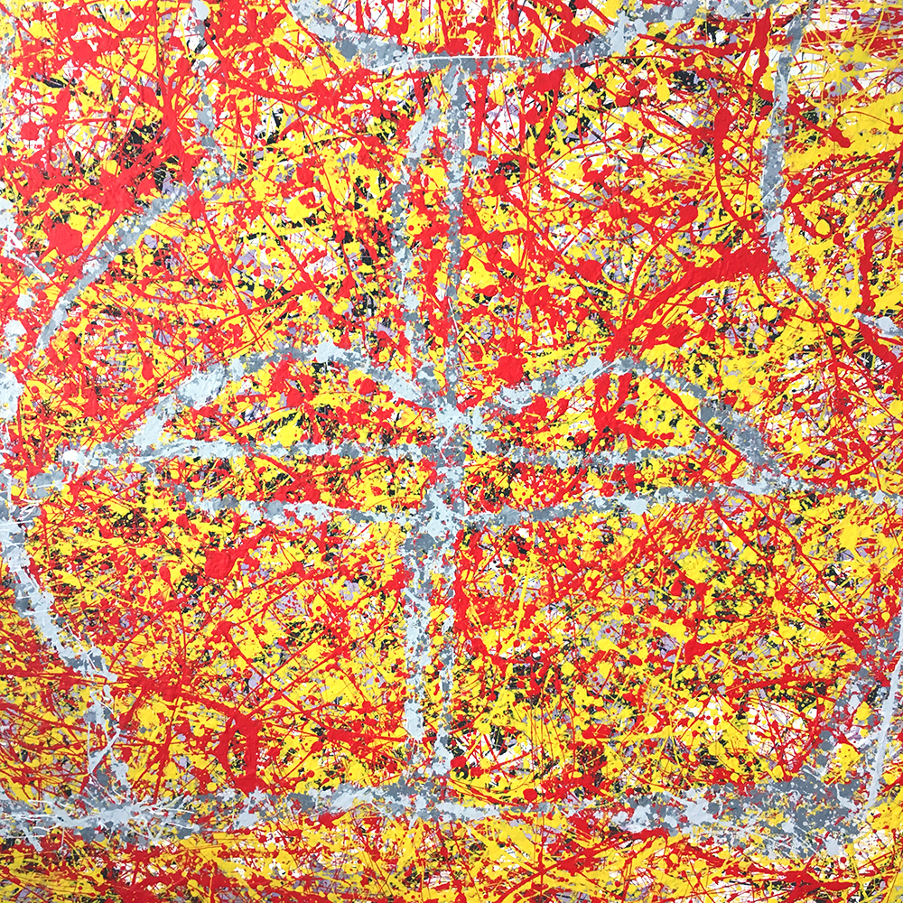
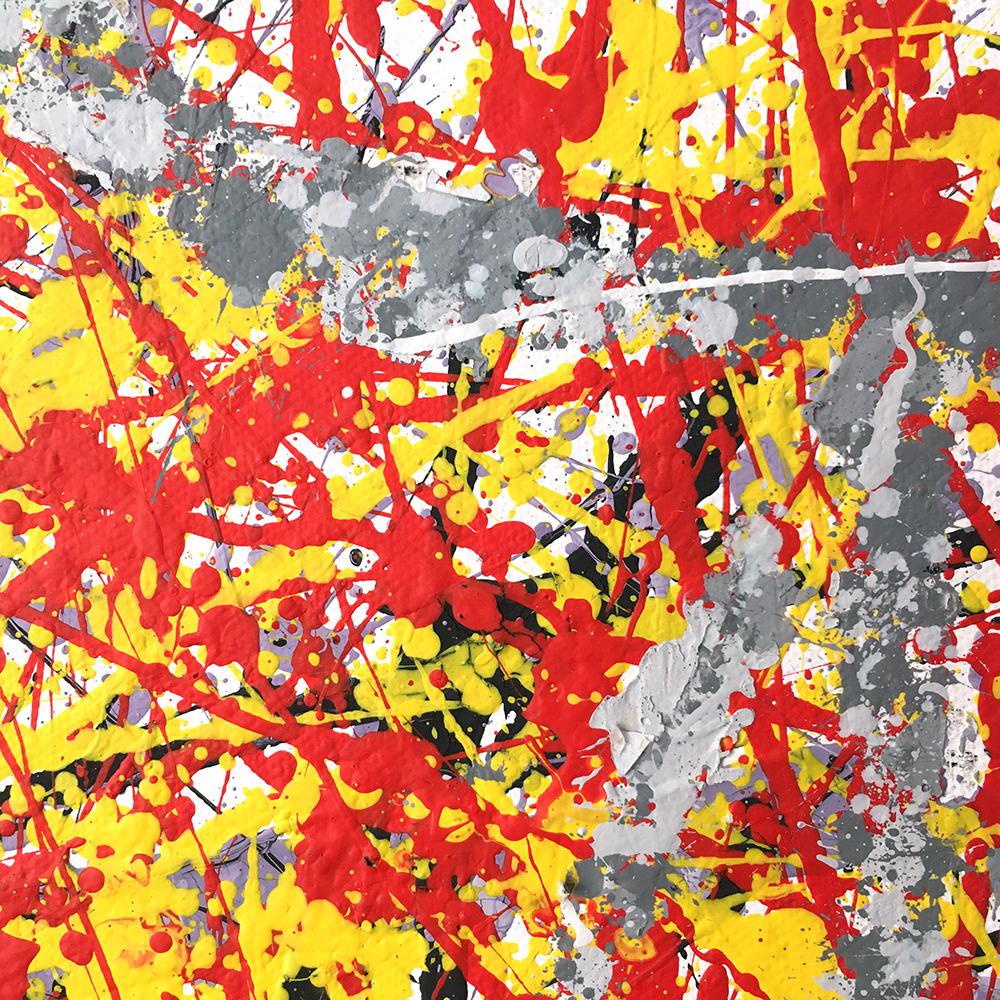
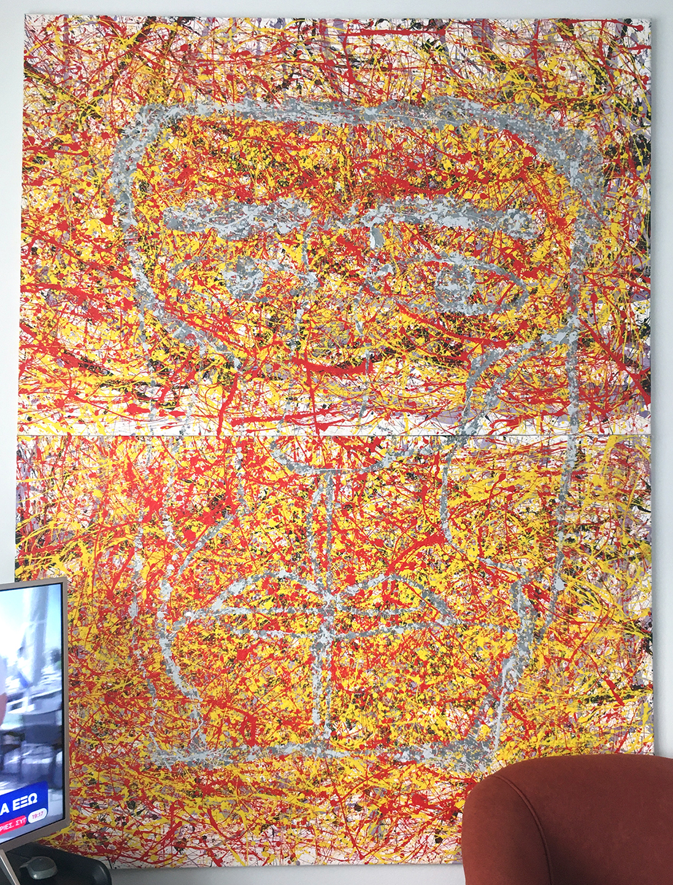

радость is a collaboration between mother and son.
Together we completed a painting, while listening to classic music and the nature, that was close to the studio, influenced by Jackson Pollock's technique.
This took place in healthyfoodstudio_2k18 in Heraklion, Crete, Greece. Started in 2018 and was finished in 2019. What you can see on the videos above, is what happened during the procedure of creation.
Material that were used, were 2 canvas (1×1.5m), several plastic paints, 2 wooden sticks, paper, markers, lots of healthy foods and lots of time.
This project is divided in two parts.
On the first part, a time-lapse of the first layer paint is presented. We hear noise, in contrast to the classical music, that we were listening, while painting and also a poem by Osip Mandelstam, in Russian and English, translated by Stephen Dodson. In addition, we translated this poem in Greek.
On the second part, the remaining procedure, till the end of this project, is presented. Now, we hear only the bees buzzing on a sunny but windy day.
Everybody should have free time to create and free materials to do this. I'm always curious on how people experience this process.

Возьми на радость из моих ладоней
Немного солнца и немного меда,
Как нам велели пчелы Персефоны.
Не отвязать неприкрепленной лодки,
Не услыхать в меха обутой тени,
Не превозмочь в дремучей жизни страха.
Нам остаются только поцелуи,
Мохнатые, как маленькие пчелы,
Что умирают, вылетев из улья.
Они шуршат в прозрачных дебрях ночи,
Их родина — дремучий лес Тайгета,
Их пища — время, медуница, мята.
Возьми ж на радость дикий мой подарок,
Невзрачное сухое ожерелье
Из мертвых пчел, мед превративших в солнце.
poem by Osip Mandelstam
Take—for the sake of joy—out of my palms
a little sunlight and a little honey,
as we were told to by Persephone’s bees.
You can’t untie a boat that isn’t moored,
nor can you hear a shadow shod in fur,
nor—in this dense life—overpower fear.
The only thing that’s left to us is kisses:
fuzzy kisses, like the little bees
who die in midair, flying from their hive.
They rustle in the night’s transparent thickets,
their homeland the dense forest of Taygetus,
their food: time, pulmonaria, mint…
Here, take—for the sake of joy—my wild gift,
this necklace, dry and unattractive,
of dead bees who turned honey into sun.
poem by Osip Mandelstam. translated by Stephen Dodson


Πάρτε, στο όνομα της ευτυχίας, από τα δικά μας χέρια,
λίγο ήλιο και λίγο μέλι,
όπως μας πρόσταξαν οι μέλισσες της Περσεφόνης.
Δεν μπορείς να λύσεις μια βάρκα που δεν είναι δεμένη,
ούτε να ακούσεις τη σκιά πάνω στη γούνα,
ούτε να νικήσεις, σε αυτήν την έντονη ζωή, τον φόβο.
Μας μένουν μόνο τα φιλιά,
χνουδωτά, όπως οι μικρές μέλισσες,
που πεθαίνουν πετώντας από τη κυψέλη.
Θροΐζουν στις διαφανείς άγριες νύχτες,
η πατρίδα τους το πυκνό δάσος του Ταΰγετου,
η τροφή τους— ο χρόνος, η Πουλμονάρια, η μέντα.
Πάρτε λοιπόν, στο όνομα της ευτυχίας, το παράξενο δώρο μου,
ξηρό και αποκρουστικό, περιδέραιο
από νεκρές μέλισσες, μέλι μεταμορφωμένο σε ήλιο.
poem by Osip Mandelstam. translated by Eleutheria Vlasiadi
